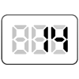

【014】5回の繰り返しをコンソールに表示

- プロンプト例
JavaScriptでfor文を使った完全未経験者向けの問題を５問作成して
- 出力は、consoleに
基本構文（超初心者向け）
for (初期値; 条件; 増減) { console.log(表示したい内容); }
例
for (let i = 1; i <= 5; i++) { console.log(i); }
🧠 for文の超重要ポイントまとめ
| やりたいこと | 書き方 |
|---|---|
| 回数くり返す | i <= 回数 |
| 数を増やす | i++ |
| 数を減らす | i-- |
| 偶数判定 | i % 2 === 0 |
for文 練習問題（超初心者向け）
【第1問】1〜5までの数字を表示しよう
問題
for文を使って、1から5までの数字を順番にconsoleに表示してください。
出力例
1 2 3 4 5
【第2問】1〜10までの数字を表示しよう
問題
for文を使って、1から10までの数字をconsoleに表示してください。
出力例
1 2 3 4 5 6 7 8 9 10
【第3問】0〜4までの数字を表示しよう
問題
for文を使って、0から4までをconsoleに表示してください。
出力例
1 2 3 4 5
【第4問】5回「こんにちは」と表示しよう
問題
for文を使って、「こんにちは」 を 5回 consoleに表示してください。
出力例
こんにちは こんにちは こんにちは こんにちは こんにちは
【第5問】偶数だけ表示しよう
問題
for文を使って、1〜10の中の偶数だけをconsoleに表示してください。
出力例
2 4 6 8 10
for文 練習問題【解答例】
【第1問】1〜5まで表示
for (let i = 1; i <= 5; i++) { console.log(i); }
【第2問】1〜10まで表示
for (let i = 1; i <= 10; i++) { console.log(i); }
【第3問】0〜4まで表示
for (let i = 0; i <= 4; i++) { console.log(i); }
【第4問】「こんにちは」を5回表示
for (let i = 1; i <= 5; i++) { console.log("こんにちは"); }
【第5問】1〜10の偶数だけ表示
for (let i = 1; i <= 10; i++) { if (i % 2 === 0) { console.log(i); } }
📝 超かんたん解説
for (let i = 1; i <= 5; i++)
| 部分 | 意味 |
|---|---|
| let i = 1 | iを1からスタート |
| i <= 5 | iが5以下の間くり返す |
| i++ | 1回ごとに1ずつ増える |
注意
配列の値をすべて取得して繰り返す場合は、
i = 0 になります。